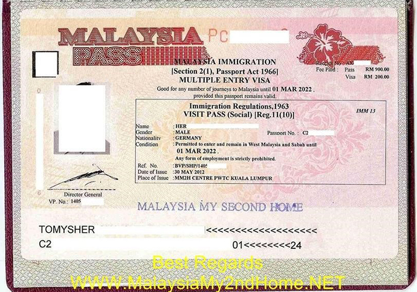
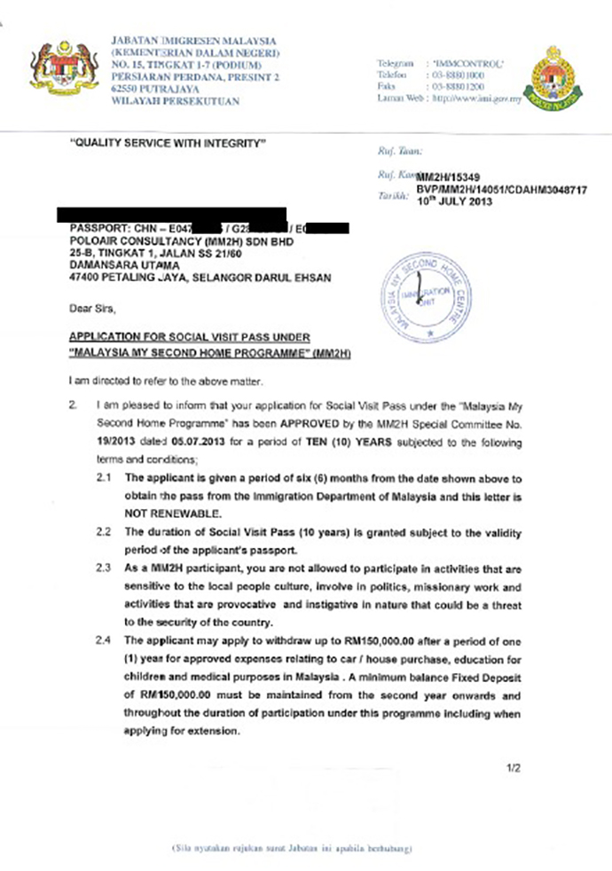

项目优势：
流程简单，材料简洁
无年龄、英语、工作经验要求
无需解释资金来源，资金要求小
没有移民监，无居住要求
安全性高，存款即可获得居留身份
持有马来身份者可长期多次出入新加坡
沿袭英国及欧美的教育体系，实行"3+0"和"双联课程"
政策解读：
马来西亚第二家园项目是马来西亚政府为吸引外国资金、促进旅游、发展经济而出台的一项政策，目的是鼓励外籍人士在马来西亚较长时间居住。项目以较低的门槛、较简易的程序和较优惠的待遇，吸引了大批国外人士到马定居。

申请条件：
主申请人年满18周岁（配偶、21周岁以下未婚子女、主申请人60岁以上父母可作为随行申请人）
无犯罪记录
提供马来西亚医院出具的体检报告，购买有效的马来西亚医疗保险
投资方式——申请人必须在马来西亚开设银行账户，进行存款
投资要求
1. 50周岁以下申请人提供30万马币存款，1年后可以取出15万马币用于购房、支付医疗费用或者孩子教育费用；提供1万马币月收入证明。
2. 50周岁以上申请人提供15万马币存款，1年后可以取出5万马币用于购房、支付医疗费用或者孩子教育费用。提供1万马币月收入证明。
办理流程：
准备资料，递交申请
获得原则性批复
6个月内登陆马来西亚
开设银行账户进行存款
进行体检购买医保
在移民局领取居留身份
签证样本：


国家概述：
马来西亚，全称马来西亚联邦，位于东南亚，地处太平洋和印度洋之间，首都为吉隆坡。与中国无时差。被南中国海分为东马来西亚和西马来西亚两部分，南隔柔佛海峡与新加坡为邻，新山市有跨海大桥（又名新柔长堤）与新加坡相通，长1,056米，步行约15分钟。由首都吉隆坡至新加坡的飞行时间约1小时。马来西亚因位于赤道附近，属于热带雨林气候和热带季风气候，无明显的四季之分，平均温度在26—30℃之间，全年雨量充沛。官方语言是马来语，英语是第二语言。